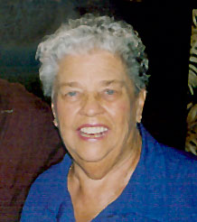

 Barbara Ann Lewis, 74, of Naples, died December 17, 2005. She had been a resident of Naples, Florida since 1991, coming from North Kingstown, Rhode Island. She was a member of Royal Wood Country Club, where she was active in the Ladies Golf League and the Theatrical Group and enjoyed playing Mahjong. She is survived by her husband, Francis A. "Frank" Lewis of Naples, her children, Steven (Cathi) Lewis of Painesville, Ohio, Daniel (Jane Cremisi) Lewis of Needham, Mass., Nancy (Randy Fay) Lewis of Centennial, Colorado, and Mark (Anthony Ramirez) Lewis of Orange County, California. Also surviving are her sister Lorraine Flint of Needham, Mass., seven grandchildren, and two great grandchildren.
God saw you were getting tired,
and a cure was not to be. So He
put his arms around you
and whispered, “Come with me.”
In tears we watched you suffer
and saw you fade away.
Although we loved you dearly
we could not make you stay.
A heart of gold stopped breathing and
hard-working hands now rest.
God broke our hearts to prove to us,
He only takes the best.
Services will be held in Naples and in Needham.